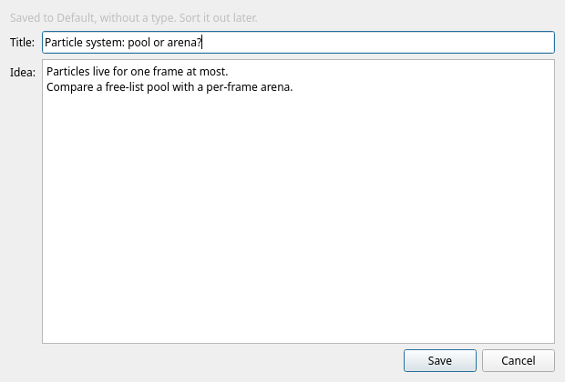
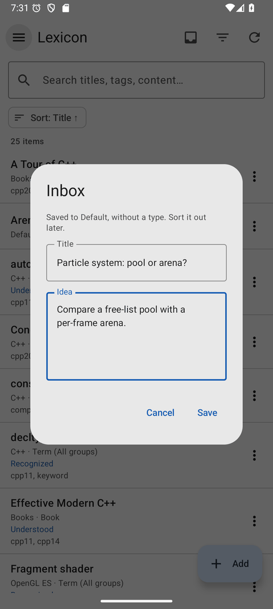

Inbox
An idea you have to file properly is an idea you will not write down. The Inbox takes a title and a few lines and saves them in one step — sorting out the group, the type and the links can wait.
Catch an idea
| Client | How to open it |
|---|---|
| Desktop | The Inbox button next to Add ..., or File → Inbox... (Ctrl+I) |
| Web client | The Inbox button above the table (behind the ⋮ More actions menu on a phone) |
| Android | The Inbox: save an idea action in the top bar |
The form has two fields, a title and the idea itself as plain text, and one Save button. Whatever the filters happen to show, the item goes to the Default group with the type Inbox, so nothing has to be decided in the moment — and filtering by the type later shows exactly what is still to sort out.
The first idea creates the Inbox type, available in all groups, so an idea keeps it when you move it to its proper group; give it its real type when you file it. If you already have a type called Inbox — in all groups or in Default — that one is used.

Offline on Android
On the phone the Inbox also works without a connection — on a train, in a basement, or with the server switched off at home:
- Save the idea as usual. If the server cannot be reached, it waits on the phone and a banner says so: 1 idea waits on this phone and is sent when the server can be reached.
- Show lists what is waiting; Send now tries again straight away.
- As soon as the server answers, the ideas go out in the order you wrote them and the banner disappears.

Sorting it out later
Inbox items are ordinary items, so the usual tools empty the Inbox:
- Filter
Group = DefaultandType = All typesto see everything that was caught in a hurry. - Open an item, move it to the right group, give it a type and fill in the fields.
- Add links — or write
[[wiki links]]in the content and let Add links from content do it.
Empty it on a schedule Ten minutes on a Sunday is enough to turn a week of caught ideas into real items — and an alarm can remind you.